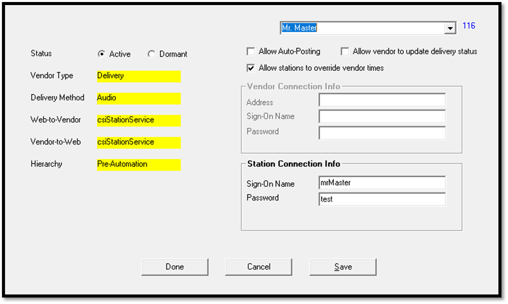
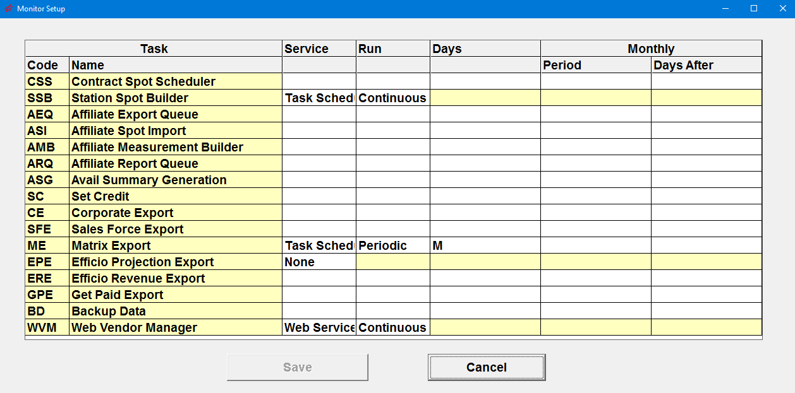
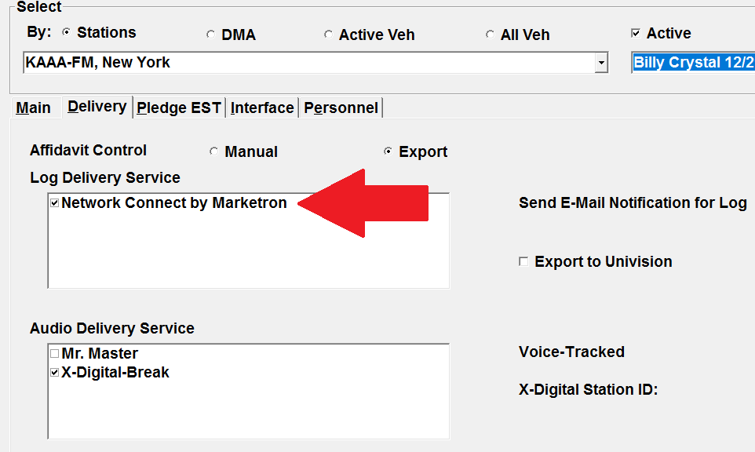

Web Vendor Setup
Setting up the system to use Web Vendors is a multi-step process that involves the following actions:
- Activating and configuring vendors on the Vendor Setup screen.
- Configuring the Task Monitor to monitor the Web Vendor Manager, which enables Web Vendor Alerts.
- Enabling log and audio delivery services on the Affiliate Agreements screen for agreements.
- Installing and configuring software on the Web Server to monitor and run the exports and imports.
Vendor Setup
Vendor services are enabled on the Vendor Setup screen, which is accessed from the Affiliate System -> File menu. To update information on the Vendor Setup screen, you will need a keycode from Counterpoint support.

The different vendor services are selected from the dropdown in the upper right corner, and each service can be defined with the following information:
Status: a status of Active means that the service is enabled for use. Dormant means it is not used.
Allow Auto-Posting: When checked on, airing information imported from a web service will get posted automatically, without requiring approval by a station user. When not checked on, airing information imported from a web service will not get posted automatically, and must be manually reviewed and posted by a station user by accessing the Affidavit page and pressing the Submit Posts button.
Allow vendor to update delivery status: This checkbox is for use with the Mr. Master service to allow web version 2 stations to be posted by Mr. Master. When the Mr. Master service is set to "allow vendor the update delivery status", any agreement that does not have Mr. Master enabled as an audio delivery service, but that gets auto-posted spot information from Mr. Master and that gets imported from the Counterpoint Affidavit website, will automatically get Mr. Master enabled as an audio delivery service on the agreement.
Allow stations to override vendor times: When checked on, station users will be allowed to override spot times on the web affidavit even after it was imported from the vendor. When not checked on, station users will not be able to override imported spot times.
Delivery Method/Web-to-Vendor/Vendor-to-Web/Hierarchy: These settings are hardcoded for each service and cannot be changed. They contain information about the vendor service.
- Delivery Method: the two choices are Log and Audio.
- Web-to-Vendor/Vendor-to-Web: every service is defined as a csiVendorService or a csiStationService (or both) or neither. “None” means the vendor is not a web vendor.
- Hierarchy: the options are pre-automation, automation, and heard.
- Pre-automation: the aired times are typed in manually by each station on the Counterpoint Affidavit website.
- Automation: aired times are entered by a computer, using data pulled from station automation systems.
- Heard: verification is done by a machine that has a radio attached to it set to the station’s frequency. The entire day’s audio is taped and compared to pre-stored files of the spot audio signal, and if they match, that time is sent to Counterpoint. This is the most accurate method.
Vendor Connection Info: This section is used to enter the IP address, sign-on name, and password provided by the vendor for a service defined as a “csiVendorService”. If the address begins with “http:”, it is optional to include it. If it begins with “https:” (secure website), that must be included in the address.
Station Connection Info: This section is used to enter the sign-on name and password provided to the vendor for a service defined as a “csiStationService”.
How to Enable a Web Vendor
These steps describe how to enable a web vendor for use.
Note on upgrading from an earlier software version: if a vendor service such as Marketron was already being used on version 6.1 or earlier, the service will be automatically set to “Active” when converting to version 7.0. However, to use a service to send data from the web directly to and from the vendor, the Vendor Connection Info and/or Station Connection Info must be manually entered on the Vendor Setup screen.
- Notify the vendor of the “Network Name” defined in the “Client Name” field in Traffic Site Options on the General tab.
- Select the vendor from the dropdown list in the upper right corner of the Vendor Setup screen.
- Set the Status to “Active”.
- Fill out the Connection Info as needed.
- If the vendor is defined as a “csiVendorService” in either the Web-to-Vendor or the Vendor-to-Web section (on the left side of the screen, in yellow), contact the vendor to get the IP address, username, and password, and enter it in the Vendor Connection Info area in the Address, Sign-on Name, and Password fields.
- If the vendor is defined as a “csiStationService” in either the Web-to-Vendor or the Vendor-to-Web section (on the left side of the screen, in yellow), fill out the sign-on name and the password in the Station Connection Info area and send the values used to the vendor so they will have them.
- If the vendor is defined as both a csiVendorService and a csiStationService, or they have “Both Services” defined in the Web-to-Vendor/Vendor-to-Web area (like Wide Orbit Traffic Radio Interchange), then the Vendor Connection Info and the Station Connection Info must both be entered.
- Press Save to save the Connection Info.
Marketron note: When Network Connect by Marketron is set to Active, and the Vendor Connection Info section is filled out, the Marketron export and import will no longer be available from the File -> Export and File -> Import menus (and the Export Center), as the export and import will now be handled by the Vendor Manager on the web.
Additional note: If a web vendor is set to Active and Save is pressed without the Station Connection Info being configured (for a station service), or the Vendor Connection Info being configured (for a vendor service), a warning message will appear that notifies the user the Connection Info is not filled out, and asks whether to continue with the save by pressing OK, or whether to cancel the save process.
Task Monitor
The Task Monitor system is used to monitor the status of various services, including the Web Vendor Manager. The Web Vendor Manager must be activated in the Task Monitor system for Web Vendor Manager alerts to be shown. (Alerts notify users when issues arise with the web vendor system and typically require some user input to resolve. See the Troubleshooting section for more info.)

To enable the Web Vendor Manager for monitoring, launch the Monitor Setup program (shown above). For the Web Vendor Manager task (near the bottom of the list), set the Service to “Web Service”, set the Run value to “Continuous”, then press Tab and press Save.
Once enabled on the Task Monitor, Web Vendor Alerts appear in several different places. The button "WVM" that is shown in the Title Bar of the Traffic and Affiliate system will turn red if there's an alert. When clicking this button, on the Traffic system, text will appear that reads "Web Vendor Manager. See Affiliate-Alerts-Web Vendors", and on the Affiliate system, the text will read "Web Vendor Manager. See Alerts-Web Vendors". This is directing the user to view the Affiliate system Alerts screen, Web Vendors radio button. This is the red "Alert" button that appears at the top of the Affiliate system near the date and time when there's an actual alert to display. (It only appears when there's an alert. The user must also have permission to view this part of the Alerts screen, as defined on the User Options screen Restrictions tab.)
Web Vendor alerts, when they are "Export" type alerts (in other words, related to exporting), will also be shown on the Affiliate Export Center screen, Alerts tab. The red "Alert" button on the Affiliate system screen shows both export type and import type alerts.
Affiliate Agreements
Once a vendor service has been enabled on the Vendor Setup screen, the service can be enabled on the Affiliate Agreements screen -> Delivery tab, in the Log Delivery Service and Audio Delivery Service area, by simply checking the appropriate checkbox and saving.

Important note: for stations set to the setting of Web Affiliate Version 1, the following web vendors will not be shown, as these services are only compatible with Web Affiliate Version 2 stations: iHeart, Mr. Master, Radio Traffic, Radio Workflow, RCS, Synchronicity, and Wide Orbit.
Web Server
There are four executables that Counterpoint will install on the web server as part of the setup process.
- CSIVendorServiceManager: this is a timer program that monitors vendors for imports.
- CSIVendorServicesExports: this is triggered by the web export to the website, and is used to run exports from the web to the vendors.
- CSIVendorServicesImports: this program runs the import from the vendors to the website.
- CSIVendorServiceUtility: this is a utility that is used to configure and monitor the system.
The following section describes the CSI Vendor Service Utility in detail. When Counterpoint sets up the CSI Vendor Service, a shortcut will also be created to run this utility. (The other programs listed above will be run in the background and do not need to be run manually outside of the CSI Vendor Service Utility.)